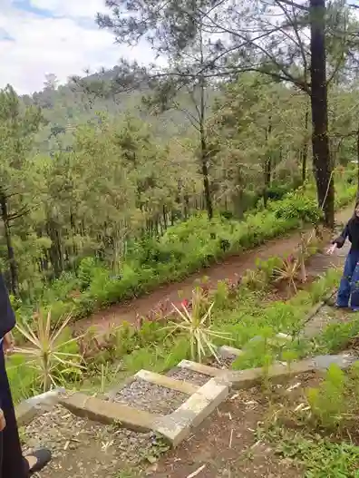

Liburan kemping seharusnya membuat Anda kembali ke rumah dengan tubuh yang lebih segar dan pikiran yang lebih jernih, bukan dengan badan pegal, perut bermasalah, atau kulit terbakar matahari. Panduan ini akan memastikan Anda tetap dalam kondisi prima sepanjang perjalanan kemping di Batu Malang.
1. Manfaat Kesehatan Kemping yang Terbukti Secara Ilmiah
Kemping di alam terbuka bukan sekadar rekreasi — ini adalah terapi kesehatan yang paling tua dan paling terbukti efektif di dunia. Penelitian yang dipublikasikan di jurnal Environmental Health and Preventive Medicine menemukan bahwa menghabiskan waktu di lingkungan alam (disebut Shinrin-yoku atau "mandi hutan" dalam tradisi Jepang) secara signifikan menurunkan kadar hormon stres kortisol, menurunkan tekanan darah, meningkatkan aktivitas sel-sel Natural Killer (NK) dalam sistem imun, dan memperbaiki kualitas tidur secara keseluruhan.
Di Batu Malang, manfaat ini diperkuat oleh ketinggian di atas 1.000 mdpl yang berarti udara lebih dingin dan bersih, konsentrasi oksigen yang sedikit lebih rendah yang melatih kapasitas paru-paru secara alami, dan keberadaan hutan pinus yang melepaskan phytoncides — senyawa antibakteri alami yang terbukti meningkatkan jumlah dan aktivitas sel imun NK hingga 50 persen selama berminggu-minggu setelah paparan. Dengan kata lain, setiap tarikan napas di Batu Malang adalah dosis kesehatan yang tidak bisa Anda dapatkan di gym mana pun.
"Tidak ada obat yang lebih ampuh dari udara pegunungan yang bersih, tidur di bawah bintang, dan bangun bersama matahari terbit. Alam adalah apotek terbesar yang pernah diciptakan." - Adiel Ebert
1.1 Dampak Positif pada Kesehatan Mental
Selain manfaat fisik, kemping di alam memiliki dampak luar biasa pada kesehatan mental. Sebuah studi dari Stanford University menunjukkan bahwa berjalan di alam selama 90 menit mengurangi aktivitas di bagian otak yang terkait dengan perasaan negatif berulang (rumination) secara signifikan. Fenomena ini dikenal sebagai Attention Restoration Theory — alam memberikan stimulasi yang cukup untuk menyegarkan kapasitas perhatian kita tanpa membebaninya seperti yang dilakukan lingkungan perkotaan yang penuh dengan polusi visual dan suara.
Indikator Kesehatan yang Meningkat saat Kemping:
- Kadar kortisol (hormon stres) turun rata-rata 12-16% setelah 2 hari di alam.
- Tekanan darah sistolik turun 5-7 mmHg dibandingkan di lingkungan perkotaan.
- Kualitas tidur meningkat drastis berkat sinkronisasi ritme sirkadian dengan cahaya alami.
- Kreativitas dan problem-solving meningkat hingga 50% setelah 4 hari di alam (ART).


2. Olahraga dan Aktivitas Fisik Selama Kemping
Salah satu keuntungan terbesar kemping adalah bahwa hampir setiap aktivitas yang Anda lakukan — dari mendirikan tenda, mengumpulkan kayu bakar, memasak di atas api, hingga berjalan ke kamar mandi — melibatkan gerakan fisik yang melatih berbagai kelompok otot. Namun untuk memaksimalkan manfaat kebugaran, ada beberapa aktivitas terstruktur yang sangat direkomendasikan.
Mulailah pagi Anda dengan sesi stretching ringan selama 10-15 menit setelah keluar dari tenda. Udara dingin membuat otot dan sendi lebih kaku, jadi pemanasan sangat penting untuk mencegah cedera. Fokuskan pada peregangan hamstring, punggung bawah, dan bahu — area yang paling terpengaruh oleh tidur di permukaan yang tidak teratur. Lanjutkan dengan latihan pernapasan dalam selama 5 menit untuk mengisi paru-paru dengan udara pegunungan yang kaya oksigen.
- Hiking Pagi: Jalan kaki 30-60 menit di jalur setapak sekitar area kemping. Ini melatih kardiovaskular, memperkuat otot kaki, dan memberikan paparan cahaya pagi yang memperkuat ritme sirkadian tubuh.
- Yoga Outdoor: Bawa matras lipat ringan dan lakukan sesi yoga sederhana di area yang datar dekat tenda. Pose seperti Sun Salutation sangat cocok untuk pemanasan pagi di alam.
- Bodyweight Training: Lakukan push-up, squat, dan plank menggunakan berat badan sendiri. Tidak perlu alat — alam sudah menyediakan medan latihan terbaik.

2.1 Latihan Kardio Alami di Ketinggian
Berolahraga di ketinggian memberikan keuntungan tambahan yang signifikan. Kadar oksigen yang sedikit lebih rendah di ketinggian di atas 1.000 mdpl memaksa jantung dan paru-paru bekerja lebih keras, yang berarti Anda mendapatkan efek latihan kardio yang lebih intensif dengan usaha yang sama dibandingkan di dataran rendah. Ini prinsip yang sama yang digunakan atlet profesional saat berlatih di ketinggian untuk meningkatkan performa mereka — dan Anda mendapatkannya secara gratis hanya dengan kemping di Batu Malang.
3. Nutrisi dan Hidrasi Optimal di Alam Terbuka
Menjaga asupan nutrisi yang tepat selama kemping lebih menantang daripada di rumah, namun dengan perencanaan yang baik, Anda bisa tetap mendapatkan gizi seimbang. Fokus utama adalah pada tiga pilar: karbohidrat kompleks untuk energi berkelanjutan, protein untuk pemulihan otot setelah aktivitas seharian, dan lemak sehat untuk menjaga kehangatan tubuh di malam hari yang dingin.
Hidrasi adalah aspek yang paling sering diabaikan. Di ketinggian, tubuh kehilangan cairan lebih cepat melalui pernapasan karena udara yang lebih kering. Targetkan minimal 2-3 liter air per hari, lebih banyak jika Anda aktif hiking atau berolahraga. Bawa botol air yang bisa diisi ulang dan tablet elektrolit untuk mengganti mineral yang hilang melalui keringat selama aktivitas di bawah terik matahari siang.

4. Perawatan Kulit dan Perlindungan dari Elemen Alam
Alam terbuka mengekspos kulit Anda pada tantangan yang tidak biasa: sinar UV yang lebih intens di ketinggian (intensitas UV meningkat 10-12% setiap kenaikan 1.000 meter), angin dingin yang mengeringkan permukaan kulit, dan perubahan suhu drastis antara siang yang hangat dan malam yang dingin. Tanpa perlindungan yang memadai, kulit Anda bisa mengalami sunburn, dehidrasi, dan iritasi yang mengganggu kenyamanan kemping.
Gunakan sunscreen SPF 50+ broad-spectrum setiap pagi dan reapply setiap 2-3 jam, terutama di area wajah, leher, dan tangan yang paling terpapar. Di malam hari, gunakan pelembab tebal (heavy moisturizer) untuk mengembalikan kelembapan kulit yang hilang seharian. Jangan lupa pakai lip balm dengan SPF — bibir pecah-pecah di cuaca dingin dan kering bisa sangat mengganggu dan menghalangi kenikmatan kuliner kemping Anda.
4.1 Pertolongan Pertama yang Wajib Disiapkan
Kit P3K khusus kemping harus lebih lengkap dari yang biasa ada di rumah. Selain plester dan antiseptik standar, sertakan obat anti-diare (sangat penting jika memasak dengan air dari sumber alam), obat anti-alergi untuk reaksi terhadap tanaman atau serangga, krim anti-gatal untuk gigitan nyamuk atau semut, dan moleskin untuk mencegah dan merawat lecet di kaki akibat hiking. Simpan semua ini dalam kantong waterproof yang mudah diakses kapan saja.
5. FAQ Kesehatan Selama Kemping
6. Kesimpulan
Kemping di alam terbuka, khususnya di Batu Malang, adalah investasi kesehatan yang diberikan alam kepada kita secara cuma-cuma. Dari boost sistem imun melalui phytoncides yang dilepaskan pohon pinus, penurunan hormon stres melalui terapi visual pemandangan alam, hingga perbaikan ritme tidur melalui sinkronisasi dengan cahaya alami — setiap aspek pengalaman kemping berkontribusi pada penyembuhan dan peremajaan tubuh secara holistik.
Dengan persiapan yang tepat — membawa perlengkapan P3K, menjaga hidrasi, melindungi kulit dari UV, dan melakukan aktivitas fisik yang terstruktur — Anda bisa memaksimalkan manfaat kesehatan ini sambil tetap menikmati setiap momen kemping yang luar biasa. Jangan tunda lagi — alam Batu Malang sedang menunggu untuk menyembuhkan Anda.
Adiel Ebert Nakula Shandy
Senior Outdoor Enthusiast & Web Developer. Praktisi gaya hidup sehat yang percaya alam adalah obat terbaik.